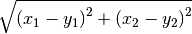

Como en cualquier otro lenguaje, en Python también es posible definir funciones, es decir, secuencias de enunciados que reciben ciertos datos, ejecutan algunas operaciones sobre ellos y devuelven un resultado.
Para definir una función se usa la palabra clave def, y el valor que va a retornar siempre debe ser precedido por un return. La sintaxis de una función es como se ve a continuación:
def NOMBRE(LISTA DE ARGUMENTOS):
ENUNCIADOS
return VALOR
La línea que contiene el return es opcional, pues no todas las funciones deben retornar algo. Por ejemplo, hay algunas que sólo modifican los valores de ciertas variables, mientras que otras sólo imprimen un valor con print
Advertencia
Es muy importante tener en cuenta que los enunciados que hacen parte de la función deben estar cuatro espacios por dentro del encabezado. En otras palabras, todo lo que esté indentado con cuatro espacios por dentro de la definición, pertenece al cuerpo de la función, ya que en Python la indentación es lo único que define la forma en que se agrupa el código. Sólo cuando el nivel de indentación se retorne al punto en que se escribió el primer def se considera que ha terminado la definición de la función.
Un ejemplo muy sencillo de una función que toma un argumento x y retorna este argumento elevado al cuadrado es:
def cuadrado(x):
return x**2
Podemos comprobar que la función esta operando correctamente al pasarle varios argumentos y ver los resultados que retorna:
In [76]: cuadrado(3)
Out[76]: 9
In [77]: cuadrado(5)
Out[77]: 25
In [78]: cuadrado(10)
Out[78]: 100
In [79]: cuadrado('a')
---------------------------------------------------------------------------
TypeError Traceback (most recent call last)
<ipython-input-79-d15440223ddf> in <module>()
----> 1 cuadrado('a')
<ipython-input-76-ca512653e72d> in cuadrado(x)
1 def cuadrado(x):
----> 2 return x**2
TypeError: unsupported operand type(s) for ** or pow(): 'str' and 'int'
En el último caso vemos que si intentamos pasarle a la función un argumento que no puede ser procesado, Python simplemente retorna un error.
Definir una función mediana que pueda calcular la mediana de cualquier lista, y aplicarla a la lista del ejemplo anterior para comprobar.
Definir una función imprimir_doble que tome un argumento x y lo imprima dos veces, con un espacio entre el una palabra y la siguiente. Por ejemplo, al evaluarla debe retornar:
In [80]: imprimir_doble(5)
5 5
In [81]: imprimir_doble('hola')
hola hola
In [82]: imprimir_doble([3,9,4])
[3, 9, 4] [3, 9, 4]
Definir una función distancia que tome dos argumentos x,y, que sean listas de dos elementos, y calcule la distancia entre ellos usando el teorema de Pitágoras:

Pueden comprobar que la función está haciendo su trabajo correctamente si retorna estos valores:
In [83]: distancia([0,0], [1,1])
Out[83]: 1.4142135623730951
In [84]: distancia([1,5], [2,2])
Out[84]: 3.1622776601683795
Definir una función media_movil que calcule la i-ésima media móvil de una lista li, dado un periodo de tiempo t y el valor i de la media móvil que se desee obtener.
Comparar que la función está devolviendo los valores correctos, con las respuestas dadas en el ejercicio anterior.
Definir una función digitos que tome un numero x y retorne los dígitos de que se compone como números enteros. Por ejemplo, digitos debe retornar:
In [85]: digitos(1234)
Out[85]: [1, 2, 3, 4]
In [86]: digitos(99861)
Out[86]: [9, 9, 8, 6, 1]
Sugerencia: Utilizar los comandos de conversión entre tipos de datos y el comando map para aplicar una función a todos los elementos de una lista. Por ejemplo, podemos usar map con cuadrado de la siguiente forma:
In [87]: map(cuadrado, [2, 3, 4, 5])
Out[87]: [4, 9, 16, 25]